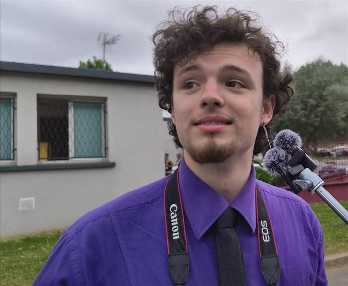
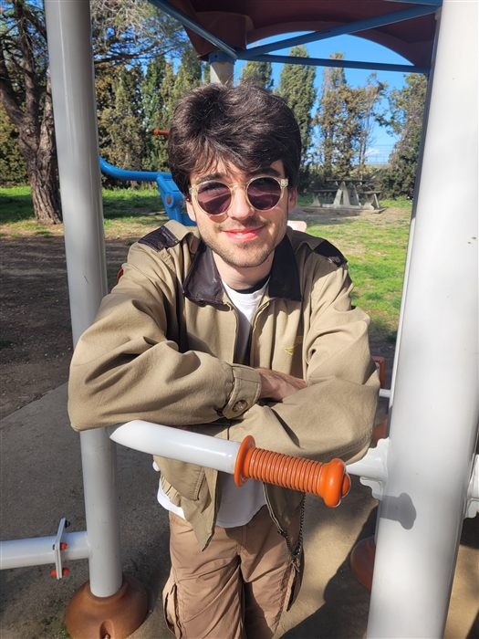

Rejoignez Ipsum Média.
Rédaction, photo, vidéo, communication, vie associative... rejoignez un collectif qui apprend en faisant, et participez à la vie du Tarn, avec l'ambition de couvrir bientôt toute l'Occitanie.
L'expérience n'est pas un prérequis
On apprend en faisant : chaque bénévole est accompagné et formé en interne, quel que soit son niveau de départ.
Du concret, sur le terrain
Reportages, interviews, articles publiés dans une vraie rédaction, pas des exercices théoriques.
Une communauté
Une vingtaine de bénévoles de tous âges, venus de toute la France, qui se soutiennent et progressent ensemble.
Tous âges, tous horizons


Nos bénévoles viennent de lycée formation communication journalisme audiovisuel
Où pouvez-vous vous investir ?
Rédaction
Écriture d'articles, interviews, enquêtes et reportages sur l'actualité du Tarn.
Photo & vidéo
Reportage terrain, montage, captation lors de nos sorties et de nos événements.
Communication
Réseaux sociaux, newsletter, graphisme et relations avec nos partenaires.
Vie associative
Organisation interne, événements, secrétariat de rédaction.
Postulez en quelques minutes
Toutes nos missions bénévoles sont publiées sur la plateforme Je Veux Aider.
Je postule sur Je Veux Aider